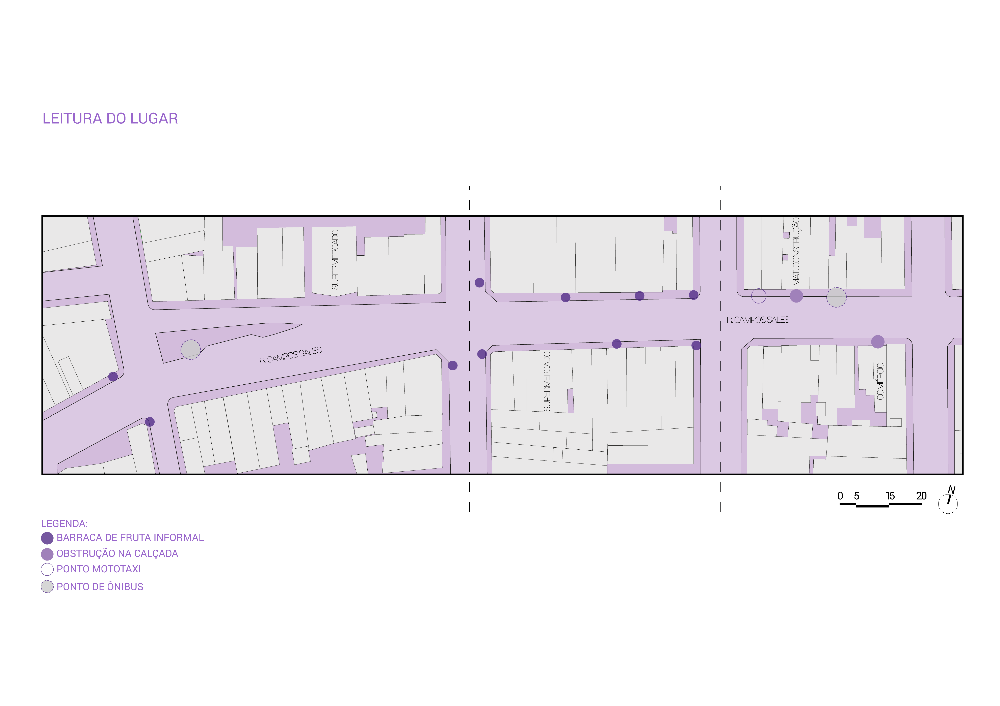
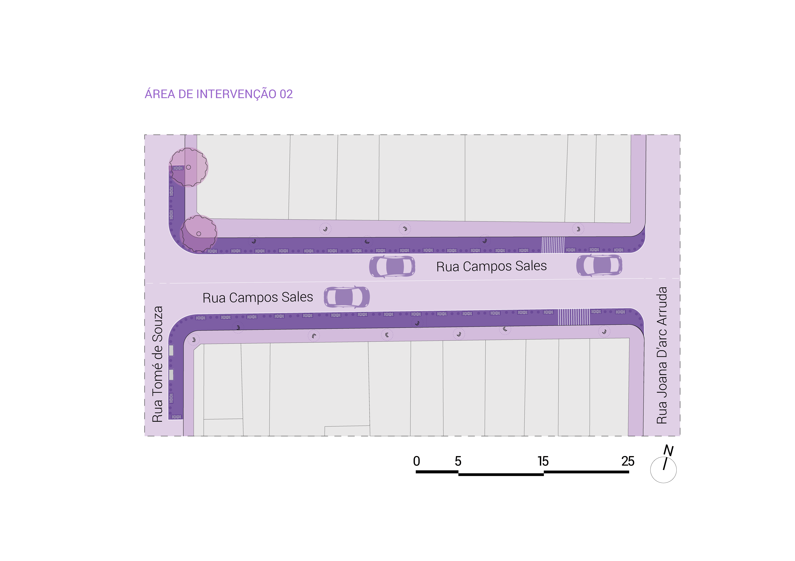
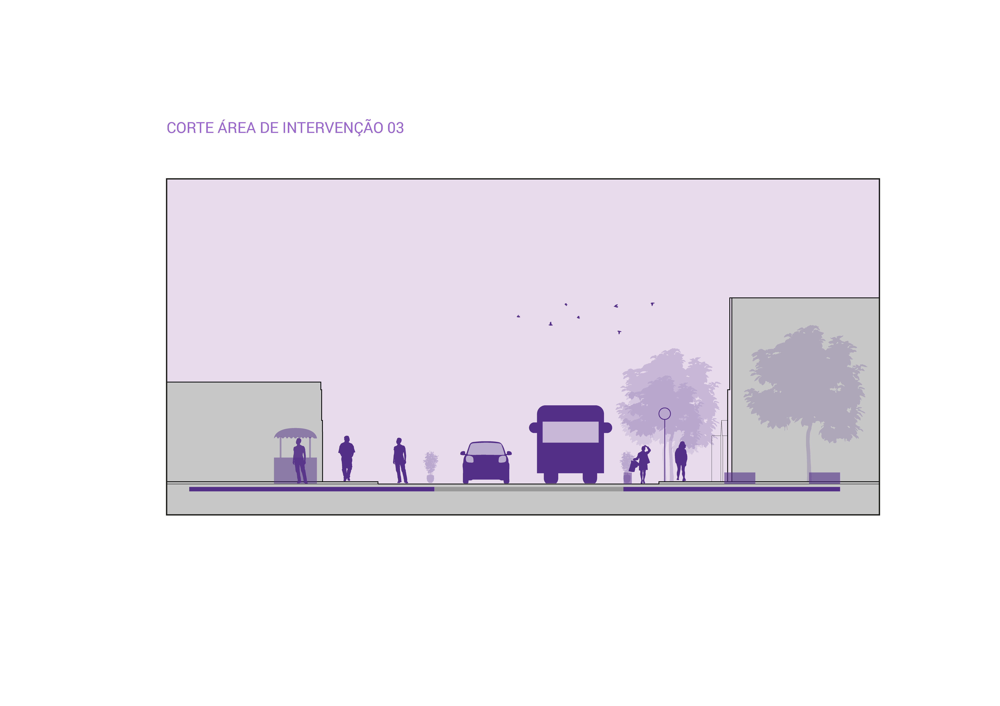
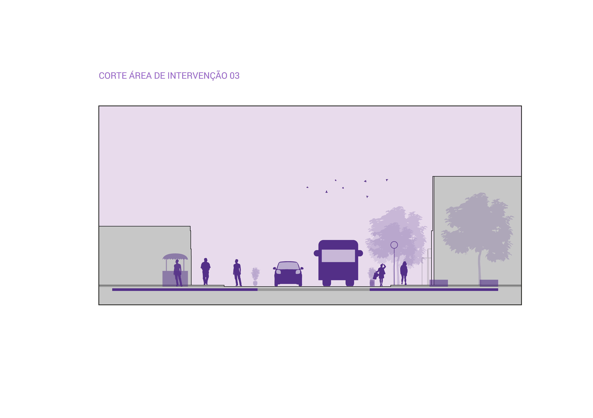

©2017 LabRua
Template: Bootstrapious
+ Kishan B

REABERTURA DO COMÉRCIO E COVID-19: DIRETRIZES PARA A RUA CAMPOS SALES
2020-12-11; covid19, diretrizes, Jose-Pinheiro, Campina-Grande
Frente aos desdobramentos da pandemia da Covid-19 em muitas cidades brasileiras, muito tem se falado sobre o ‘novo normal’ e a abertura do comércio, enquanto o poder público continua ignorando as recomendações de protocolos sanitários. Em Campina Grande, a prefeitura anunciou a flexibilização do comércio e de atividades econômicas a partir do dia 15 de junho, seguindo o plano em três etapas. Pensando nisto, o LabRua vem desenvolvendo uma série de propostas de redesenho urbano fazendo uso de ferramentas do urbanismo tático. Esta proposta tem como objetivo apresentar diretrizes para promover o uso mais seguro do setor comercial concentrado na rua Campos Sales
por Ana Clara Guimarães, Jadson Leal e Mikyell Brito.
BAIRRO JOSÉ PINHEIRO
Com a expansão da cidade, mais precisamente na década de 1930 com as reformas do então prefeito Vergniaud Wanderley, e a mudança do mercado público para a região leste da cidade nos anos 40, o bairro do José Pinheiro, também conhecido popularmente como “Zepa”, foi se condensando e se transformando no grande aglomerado humano, social e cultural.

Fazendo limites com os bairros do Santo Antônio, Mirante, Monte Castelo, Centro e Catolé, o bairro do José Pinheiro é considerado um dos maiores, mais antigos e tradicionais de Campina Grande, com uma população de 16.112 habitantes e 499 domicílios (IBGE, 2010).
O bairro caracteriza-se por seus usos diversificados, sendo conhecido pelo seu caráter residencial e comercial. As edificações são em sua maioria de gabaritos baixos e algumas utilizam o térreo como comércio e os demais pavimentos para uso residencial.
ESCOLHA DA CAMPOS SALES
A escolha da Rua Campos Sales foi feita pela sua característica econômica: possuindo uma área com usos diversificados, tornando-se referência pela sua atividade comercial em toda a cidade. Sua grande variedade de segmentos, como mercadinhos, lotéricas, lojas de vestuário, materiais de construção e comércios informais de frutas e verduras que ficam aglomeradas nas calçadas e sucede por quase toda a via. Além disso, a rua destaca-se por seu alto índice de densidade de pessoas, abrangendo o fluxo tanto das que habitam o bairro, quanto do fluxo itinerante, que diz respeito aos que transitam ou visitam o local.
As calçadas possuem em média 2 metros de largura, o fluxo de pedestres é alto, o que diante do atual contexto de pandemia são consideradas pequenas, levando em consideração as medidas de segurança e distanciamento impostas pela OMS (Organização Mundial da Saúde).
DIRETRIZES DE INTERVENÇÃO

Para as diretrizes projetuais, mapeamos o que classificamos como ‘pontos de permanência’, sendo esses, onde estão concentrados as barracas informais de frutas e verduras, que em sua maioria obstruem o passeio dos pedestres. Além disso, a bifurcação está sendo utilizada diariamente como ponto de concentração de pessoas considerando os quiosques, a parada de ônibus, e o ponto de mototáxi existente observados.
Partindo da análise, verificou-se que em meio a pandemia as calçadas e locais onde estão os pontos de permanência, precisam ser alargados e desobstruídos, para que a reabertura do comércio na cidade funcione de acordo com as orientações preventivas de saúde em função do COVID-19. Como resultado, foi considerado diminuir a faixa de rolamento e aumentar as calçadas, para que a circulação aconteça com no mínimo de 1,5m de distância entre os pedestres. Além disso, no ponto de ônibus, foi proposto demarcar o piso pensando no mesmo distanciamento entre os usuários.





 


Vale ressaltar que as questões analisadas e as diretrizes propostas é apenas o início de uma ampla discussão sobre o assunto, onde pode-se abranger possibilidades diversas. O desafio se configura em tentar entender que comportamentos ou cenários serão refeitos e quais mudanças as nossas cidades apresentarão levando em conta o cenário de pandemia, pensando os espaços públicos e as novas formas de entender e se relacionar com a cidade diante das novas regras de convívio.
É o caso da área escolhida, tendo em vista seus usos diversos voltados principalmente à sua atividade comercial e ao fluxo de pessoas que utilizam a área diariamente, sejam elas residentes ou visitantes no bairro, revela a densidade dos que utilizam tais espaços no bairro, densidade essa que pode impactar a difusão do vírus. Levantando o debate à gestão pública e sua atuação na melhoria dos espaços públicos da cidade em tempos de pandemia.
Diretrizes para Campos Sales
.